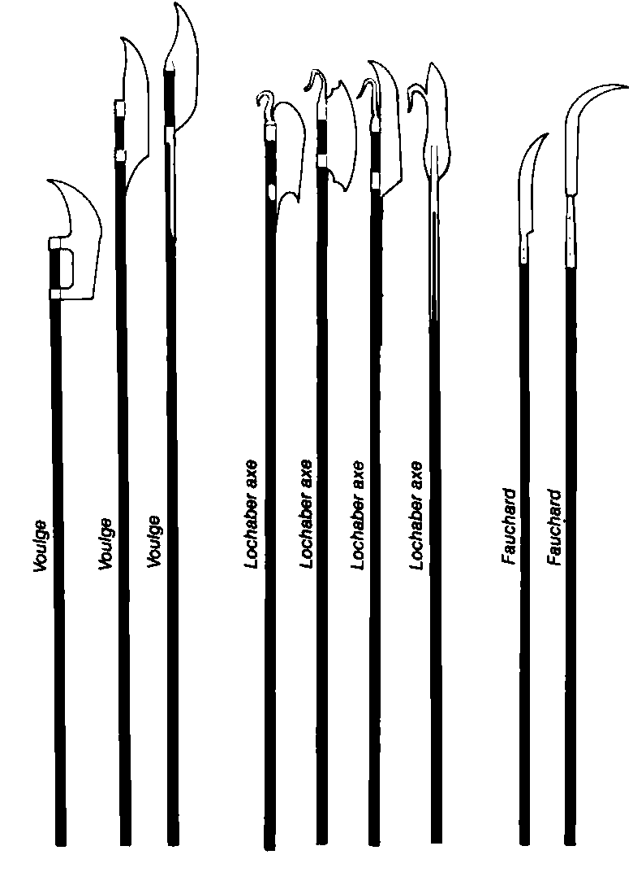
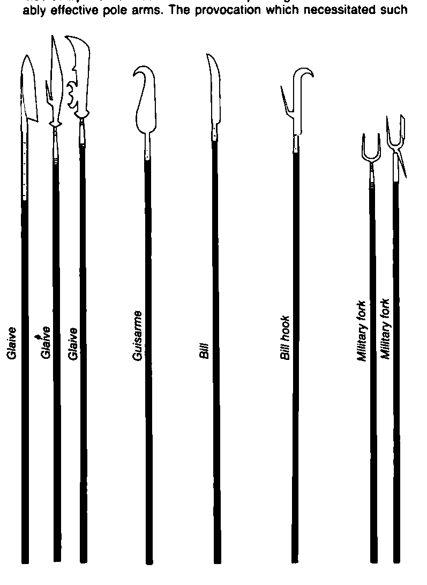

军用叉 · Military fork
普通的干草叉被拉直并加固，形成了非常有力的军用叉。这种长柄武器有两个高效的穿刺尖，用来把敌人挡在外面；有时叉口还会有第三根较短的齿，使对手被引向第三种攻击。军用叉的主要缺点，是相对于重甲目标缺乏有效的穿透力。叉的原理很快与其他长柄武器结合，形成了非常高效的战争工具。
图版还标示：长柄屠刀 Voulges、洛哈伯斧 Lochaber axes、长柄镰 Fauchards、长柄刀 Glaives、钩镰 Guisarmes、bill、bill hook、军用叉 Military forks。以下保留该页原图裁片。

